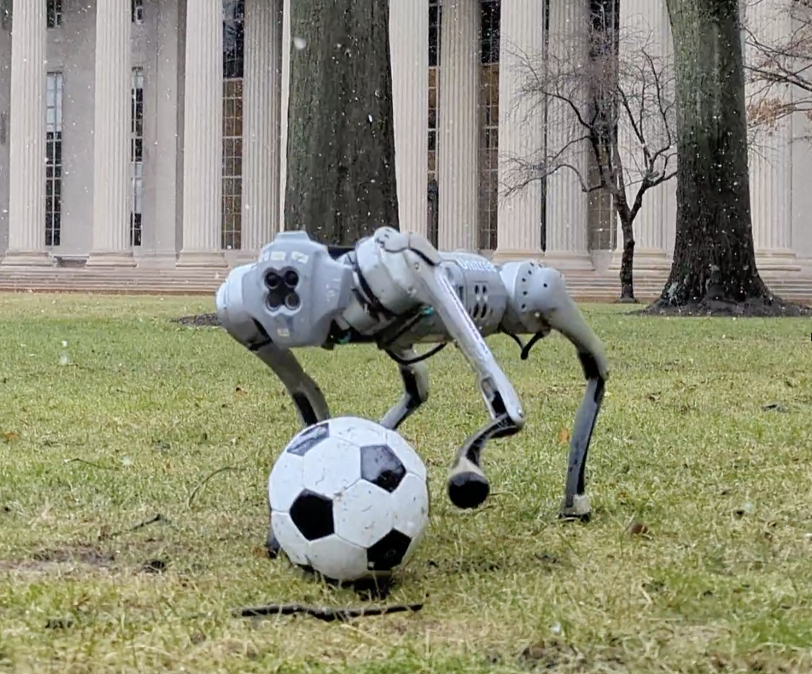
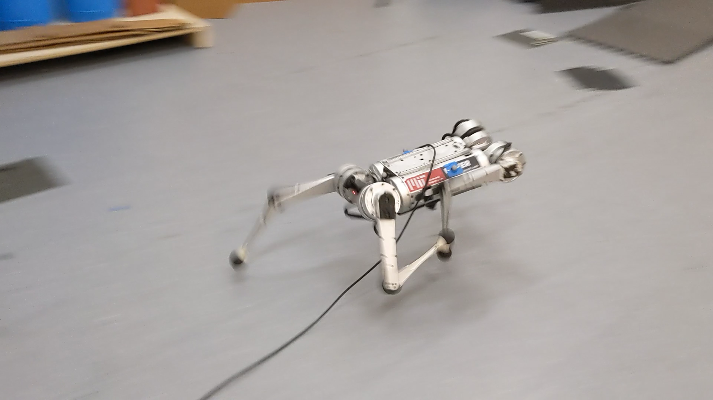
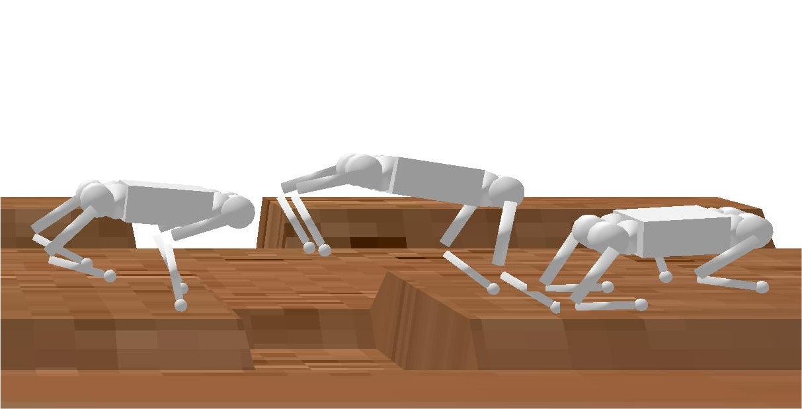

Gabriel MargolisI am a PhD student at the Computer Science and Artificial Intelligence Laboratory (CSAIL) at MIT, where I work on Embodied Intelligence. Advised by Pulkit Agrawal, I study learned control as a component of complete robotic systems. Previously, I received my BS ('20) and MEng ('21) degrees at MIT. My goal is to advance reliable and helpful mobile robots for assistance, delivery, emergency response, and sport. To this end, I think that sim-to-real reinforcement learning is a promising tool for synthesizing unscriptable motor skills. Email / Google Scholar / Twitter / GitHub / LinkedIn |
Updates
|
Research |
|  |
DribbleBot: Dynamic Legged Manipulation in the WildYandong Ji*, Gabriel B. Margolis* , Pulkit Agrawal International Conference on Robotics and Automation (ICRA), 2023 paper / project page Dynamic object manipulation with the legs, using onboard computation and sensing. |

|
Walk These Ways: Tuning Robot Control for Generalization with Multiplicity of BehaviorGabriel B. Margolis, Pulkit Agrawal Conference on Robot Learning, 2022 (Oral Presentation) paper / project page / code One learned policy embodies parameterized dynamic behaviors useful for different tasks. |
|  |
Rapid Locomotion via Reinforcement LearningGabriel B. Margolis*, Ge Yang* Kartik Paigwar, Tao Chen, Pulkit Agrawal Robotics: Science and Systems, 2022 paper / project page / code High-speed running and spinning on diverse terrains with a single neural network. |

|
Learning to Jump from PixelsGabriel B. Margolis, Tao Chen, Kartik Paigwar, Xiang Fu, Donghyun Kim, Sangbae Kim, Pulkit Agrawal Conference on Robot Learning, 2021 paper / project page A hierarchical control framework for dynamic vision-aware locomotion. |
|  |
Learning Robust Terrain-Aware LocomotionGabriel B. Margolis Master's Thesis, 2021 thesis My Master's thesis. This work received the Ernst A. Guillemin Master’s Thesis Award in Artificial Intelligence and Decision Making. |
Teaching |

|
6.141 Robotics: Science and SystemsA hands-on intro to ROS and the full autonomous driving stack. (Spring 2021) |

|
16.410 Principles of Autonomy and Decision MakingAlgorithms for planning under constraints and uncertainty. (Fall 2020) |